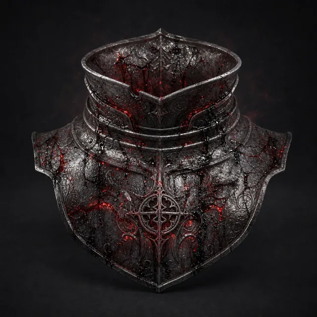

Предмет · undefined · №4
Когда надет, ваш разум открыт демоническому существу, оскверняющему эту некогда священную реликвию. Эта карта навсегда добавляется в вашу Руку, пока проклятие не будет снято, заменяя одну из карт, и Мастер получает Страх. Ваши Характеристики Проворности и Силы увеличиваются на 1, и вы получаете дополнительную кость Молитвы каждую сессию, если вы класса Серафим. Проклятие: Один раз за продолжительный отдых Мастер может потратить Страх, чтобы позволить объекту Подчинить вас. Совершите Бросок Реакции на Влияние (17); при провале вы получаете счётчик Подчинения (1d6), и Мастер немедленно активирует вас под своим контролем. Независимо от успеха или провала, уменьшите счётчик на 1. Когда он достигает 0, эффект заканчивается, и вы не помните ничего из произошедшего.
Открыть в генераторе лута